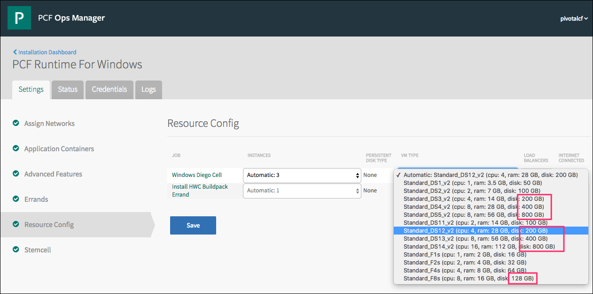
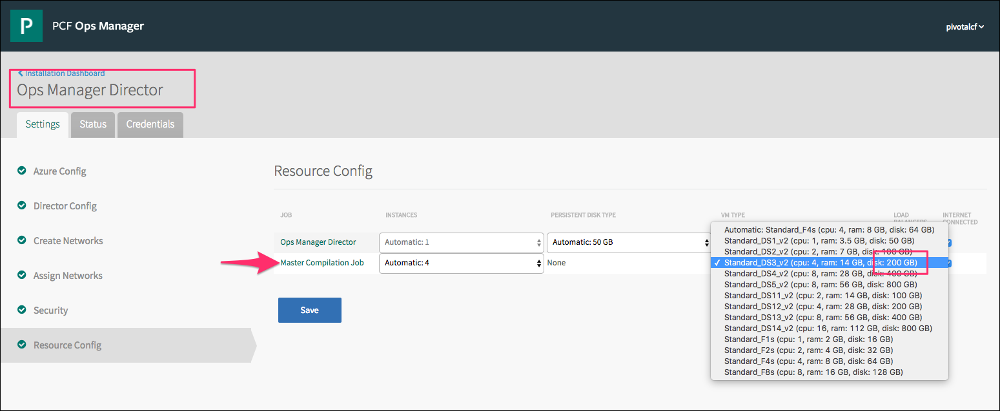

Deploying the Azure Light Stemcell
This topic explains how to download and use the Azure light stemcell. For more information about light stemcells, see the Light Stemcells section of the Using Windows Stemcells topic.
Download the Azure Light Stemcell
To download the Azure light stemcell, perform the following steps:
- Navigate to Pivotal Network.
- Select Azure Light Stemcell for Windows 2012R2 Server from the Release Download Files section of the Stemcells for PCF (Windows) page.
To start using the Azure light stemcell, perform the steps in the Enable the Azure Light Stemcell and Configure Resources sections.
Enable the Azure Light Stemcell
To use the Azure light stemcell, you must accept the corresponding license agreement and enable the stemcell for your non-trial Azure subscription through the Azure marketplace as follows:
- Navigate to https://portal.azure.com and log in.
- From the options on the left side of the page, click + New.
- In the Search the marketplace bar, search for BOSH Azure Windows Stemcell.
- Select BOSH Azure Windows Stemcell from your search results. A description of the BOSH Azure Windows Stemcell appears.
- Below the description, at the bottom of the page, click the blue banner that reads Want to deploy programmatically? Get started ➔.
- Review the Terms of Use.
- Under Choose the subscriptions, click Enable for each Azure subscription with which you want to use the stemcell.
- Click Save.
Configure Resources
When you deploy or upgrade the PAS for Windows 2012R2 tile on Azure, configure the resources of BOSH Director and PAS for Windows 2012R2 as follows:
- On the Ops Manager Installation Dashboard, select PAS for Windows 2012R2.
- In the Settings tab, select Resource Config.
- In the VM Type field, ensure that Windows Diego Cell has a disk size of 128 GB or larger.
- Ensure that Install HWC Buildpack Errand has a VM disk size of 128 GB or larger. 
- Navigate to the BOSH Director.
- In the Settings tab, select Resource Config.
- In the VM Type field, ensure that the Ops Manager compilation VM has an ephemeral disk of 128 GB or larger. 
For information about how to deploy and configure the PAS for Windows 2012R2 tile, see Deploying PAS for Windows 2012R2.